Para passageiros
Pedir uma corrida, acompanhar o motorista no mapa e chegar ao destino com segurança.
O CANGURU é um aplicativo de mobilidade que conecta passageiros e motoristas. O aplicativo está em desenvolvimento e ainda não está disponível ao público.

Pedir uma corrida, acompanhar o motorista no mapa e chegar ao destino com segurança.
Receber chamadas, conduzir a corrida com navegação e acompanhar os próprios ganhos.